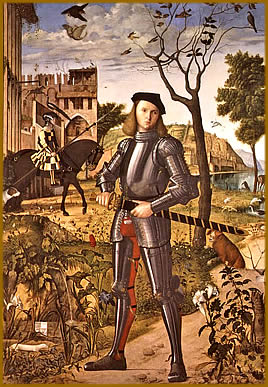

Lendas
e mitos são elementos essenciais na constituição
de todas as culturas e civilizações. Do cristianismo
ao folclore nórdico; dos contos africanos aos mitos
dos aborígenes americanos, não é raro
encontrar uma estrutura linear e semelhante entre estas
"estórias", mesmo que distantes no tempo
e no espaço. Isso se deve ao motivo de que uma lenda
é continuidade de outra; porém, acrescida
de detalhes e adaptadas à situação
na qual se encontrava. No riquíssimo período
medieval não foi diferente.
Um elemento essencial da
vida medieval foi a pregação. Nessa época,
pregar não era monologar em termos escolhidos perante
um auditório silencioso e convencido. Pregava-se
um pouco por todo lado, não apenas nas igrejas, mas
também nos mercados, nos campos de feira, no cruzamento
das estradas; e de modo muito vivo, cheio de calor e de
ímpeto. O pregador dirigia-se ao auditório,
respondia às suas perguntas, admitia mesmo as suas
contradições, os seus rumores, as suas invectivas.
Um sermão agia sobre
a multidão, podia desencadear imediatamente uma cruzada,
propagar uma heresia, preparar revoltas. O papel didático
dos clérigos era então imenso. Eram eles que
ensinavam aos fiéis a sua história e as suas
lendas, a sua ciência e a sua fé; que comunicavam
os grandes acontecimentos, transmitia de uma ponta à
outra da Europa a notícia da tomada de Jerusalém,
ou a da perda de Saint-Jean d’Acre; que aconselhavam
uns e guiavam outros, mesmo nos seus negócios profanos.
Nos nossos dias são
prejudicados nos seus estudos e na vida aqueles que não
têm memória visual, a qual, no entanto, é
mais rara, de exercício mais automático e
menos racional que a memória auditiva.
Na Idade Média a pessoa
instruía-se escutando, e a palavra era de ouro. Se
a expressão "cultura latente" teve sentido
alguma vez, foi na Idade Média. Todos têm então
um conhecimento pelo menos corrente do latim falado e articula
o cantochão, que supõe senão a ciência,
pelo menos o uso da acentuação.
Todos possuem uma cultura
mitológica e lendária. Acontece que as fábulas
e os contos dizem mais sobre a história da humanidade
e sobre a sua natureza do que uma boa parte das ciências
inscritas nos nossos dias, nos programas oficiais.
Nos romances publicados por
Thomas Deloney, vemos os tecelões citar nas suas
canções Ulisses e Penélope, Ariana
e Teseu. Os vitrais têm sido chamados "a Bíblia
dos iletrados", porque neles os mais ignorantes decifravam
sem esforço histórias que lhes eram familiares.
Realizavam assim, com toda a simplicidade, esse trabalho
de interpretação que tanta canseira dá
aos arqueólogos na época atual.
Extraído
e adaptado de www.contoselendasmedievais.blogspot.com.br